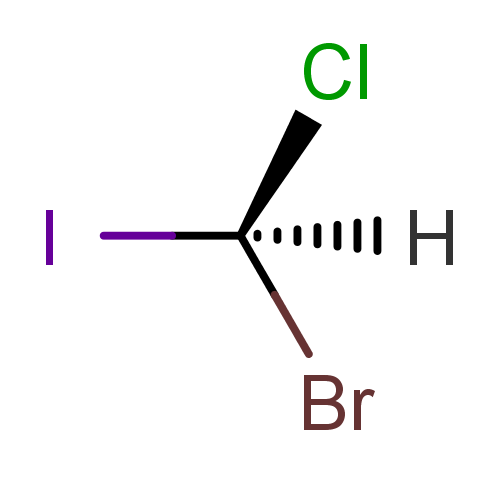
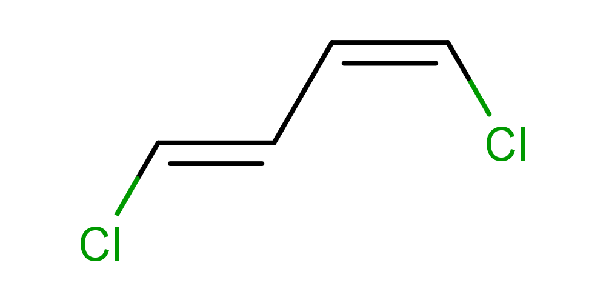
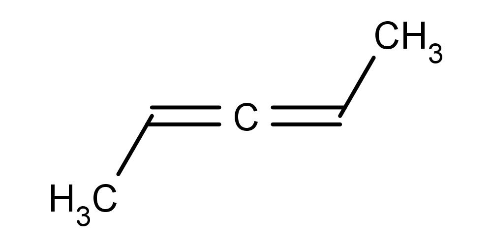
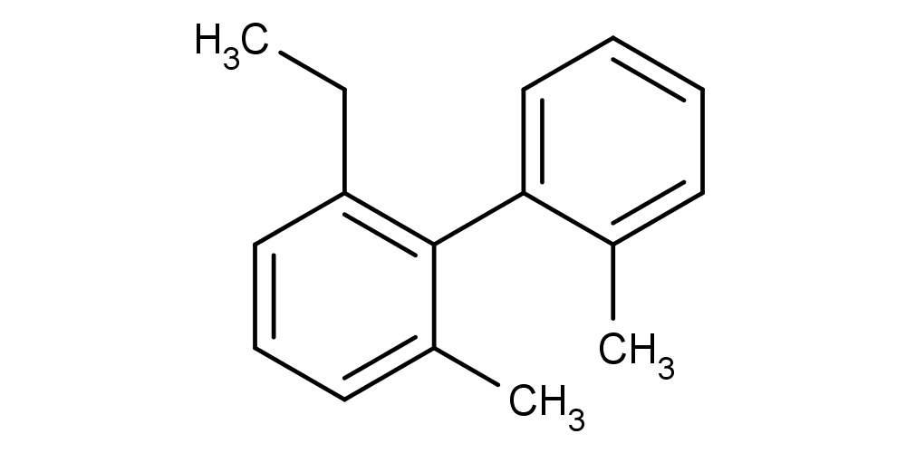
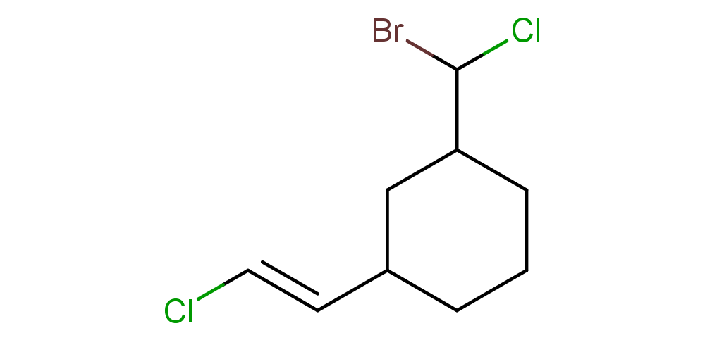

Stereochemistry involves the study of the relative spatial arrangement of atoms and their transformations. Stereochemistry defines different isomerisms that describe the molecule's behaviour in the space. These covers the entire space of organic molecules. We do not give further details on stereochemistry here, instead we refer to Marvin's stereochemistry summary:
http://www.chemaxon.com/marvin/help/sci/stereo-doc.html
It can be important to determine a molecule's stereochemical behaviour. This can be achieved by calculating stereochemical descriptors for the molecule.
ChemAxon's stereo analysis module is able to calculate stereochemical descriptors for a molecule, giving an analysis in terms of the stereochemical properties.
The stereo analysis functionality is built in different ChemAxon products.
cxcalc [general options] [input files/strings] stereoanalysis [stereoanalysis options] [input files/strings]
stereoanalysis options:
-h --help this help message
-T --type stereo descriptor type [tetrahedral | cistrans |
axial | atrop] (default: not set)
Some examples on how to use the stereo analysis module via cxcalc:
|  |
cxcalc stereoanalysis "[H][C@](Cl)(Br)I"
The output shows the calculated tetrahedral stereo descriptors:
TETRAHEDRAL [1] - [0, 2, 3, 4] : EVEN
|  |
cxcalc stereoanalysis "Cl/C=C\C=C\Cl"
The output shows the calculated cis-trans stereo descriptors:
CISTRANS [1, 2] - [0, 3] : CIS
CISTRANS [3, 4] - [2, 5] : TRANS
|  |
cxcalc stereoanalysis CC=C=CC
The output shows the calculated axial stereo descriptors:
AXIAL [1, 3] - [0, 4] : WIGGLY
|  |
cxcalc stereoanalysis "CCC1=C(C(C)=CC=C1)C1=CC=CC=C1C"
The output shows the calculated atrop stereo descriptors:
ATROP [3, 9] - [4, 2, 14, 10] : UNKNOWN
|  |
cxcalc stereoanalysis "ClC(Br)C1CCCC(C1)/C=C/Cl"
The output shows the calculated stereo descriptors:
CISTRANS [9, 10] - [7, 11] : TRANS
TETRAHEDRAL [3] - [1, 4, 8] : UNKNOWN
TETRAHEDRAL [1] - [0, 2, 3] : UNKNOWN
TETRAHEDRAL [7] - [6, 8, 9] : UNKNOWN
cxcalc stereoanalysis -T cistrans "ClC(Br)C1CCCC(C1)/C=C/Cl"
The output is:
CISTRANS [9, 10] - [7, 11] : TRANS
evaluate -e "stereoanalysis('tetrahedral')" molecule.smiles
evaluate -e "stereoanalysis()" molecule.smiles